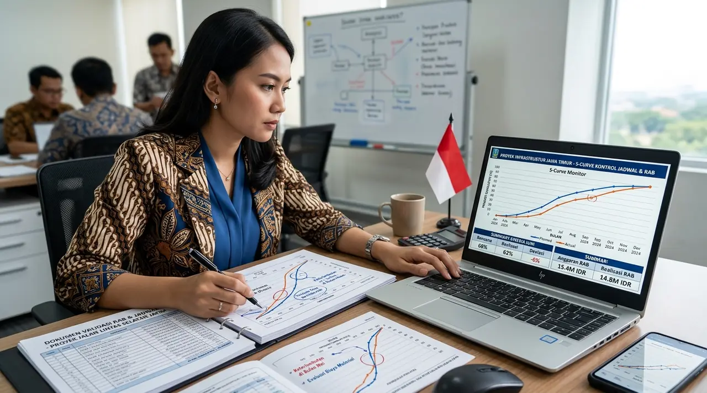

1. Tugas Pokok Konsultan Manajemen Konstruksi (MK) di Jawa Timur
Konsultan MK menjamin setiap rupiah yang diinvestasikan pemilik proyek menghasilkan mutu fisik bangunan yang sesuai dengan spesifikasi teknis.
Pada tahap pra-konstruksi, konsultan MK melakukan Value Engineering (VE) untuk meneliti potensi penghematan biaya tanpa menurunkan mutu struktur. Konsultan juga memandu proses lelang tender kontraktor agar pemilik mendapatkan harga kompetitif.
Pada tahap pelaksanaan, tim MK menginspeksi material yang datang ke lokasi (Material Approval), memeriksa kesesuaian pembesian beton sebelum izin pengecoran (RFI) diterbitkan, dan mengontrol jadwal kerja harian.
- Libatkan MK Sejak Dini: Libatkan konsultan MK sejak tahap review desain arsitektur DED agar potensi revisi gambar saat konstruksi dapat dicegah sejak awal.
- Slump Test Wajib: Wajibkan pengujian slump test dan pengambilan sampel benda uji silinder beton pada setiap truk mixer yang tiba di lokasi proyek.
- Dokumentasi RFI: Jangan izinkan kontraktor melakukan pengecoran sebelum ada lembar persetujuan Request for Inspection (RFI) bertanda tangan konsultan MK.
2. Pengendalian Jadwal Kalender & Analisa Deviasi Kurva S
Pengawasan ketat jadwal kerja mencegah keterlambatan penyelesaian proyek yang merugikan arus kas bisnis.
Kami menggunakan jadwal master Kurva S dan metode jalur kritis (Critical Path Method). Jika terjadi deviasi minus progres di atas 5%, konsultan MK segera menerbitkan Surat Peringatan dan mewajibkan kontraktor pelaksana menambah shift kerja atau tenaga tukang tambahan.

Audit dan verifikasi berkas Rencana Anggaran Biaya (RAB) serta kurva kemajuan jadwal proyek.
3. Tabel Analisis Risiko: Memakai Konsultan MK vs Tanpa Pengawas
Tabel perbandingan dampak penggunaan jasa manajemen konstruksi independen terhadap hasil akhir proyek properti.
Tabel berikut merangkum perbedaan signifikan antara proyek yang diawasi oleh konsultan MK profesional dengan proyek yang diawasi mandiri oleh pemilik.
| Parameter Evaluasi | Tanpa Konsultan Pengawas (Mandiri) | Didampingi Konsultan Manajemen Konstruksi |
|---|---|---|
| Kepatuhan Terhadap DED | Kontraktor kerap menurunkan spek material sepihak | Setiap item material dan pembesian diawasi ketat sesuai RKS & BoQ |
| Pengendalian Jadwal | Rawan molor berbulan-bulan tanpa pertanggungjawaban | Jadwal dikontrol ketat via Kurva S mingguan; penalti tegas jika lalai |
| Akurasi Pembayaran Termin | Pemilik sering membayar melebihi progres riil | Pembayaran baru disetujui setelah diverifikasi opname fisik lapangan |
| Pencegahan Kebocoran/Retak | Cacat baru ketahuan setelah bangunan dihuni | Uji rendam waterproofing dan slump test beton dilakukan di awal |
| Beban Pikiran Pemilik | Pemilik stres harus setiap hari mengawasi tukang | Pemilik cukup memantau laporan komprehensif mingguan/bulanan |
4. Skema Perhitungan Biaya Jasa Manajemen Konstruksi di Jawa Timur
Tarif jasa MK dihitung berdasarkan persentase nilai proyek atau skema retainer bulanan yang transparan.
Untuk proyek bangunan gedung atau komersial, tarif jasa berkisar antara 2,5% hingga 5% dari total nilai anggaran fisik, atau menggunakan skema retainer bulanan tetap yang mencakup penempatan tim inspektur lapangan penuh waktu.
Pertanyaan yang Sering Diajukan (FAQ)
Kesimpulan Praktis
Menggunakan jasa manajemen konstruksi profesional bukan merupakan biaya tambahan, melainkan investasi perlindungan aset yang menghemat puluhan hingga ratusan juta rupiah dari risiko overbudget dan kegagalan struktur.
Percayakan supervisi proyek properti Anda di Jawa Timur kepada Kontraktor Bangunan. Hubungi kami untuk diskusi Kerangka Acuan Kerja (KAK) pengawasan.